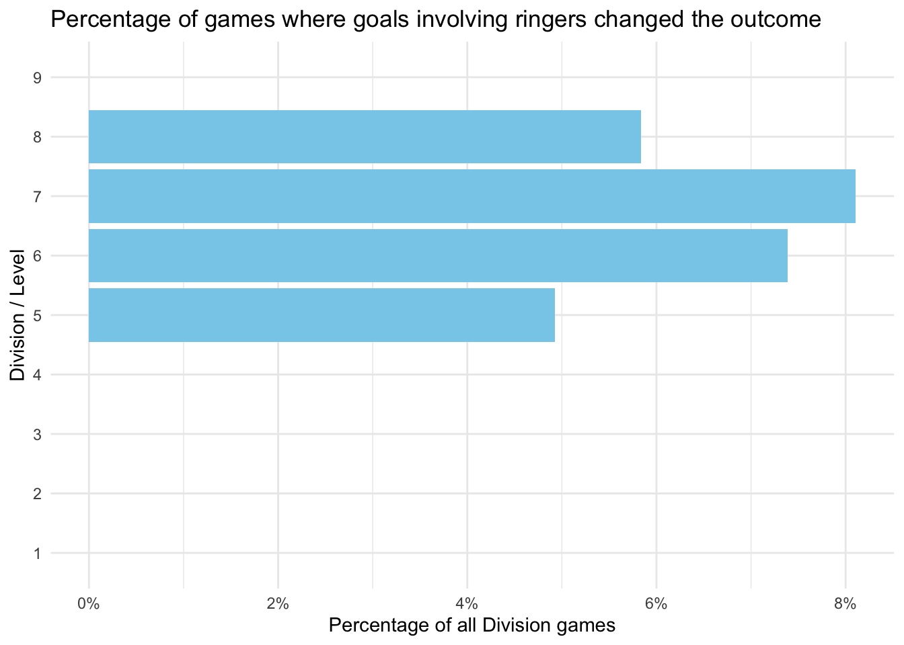
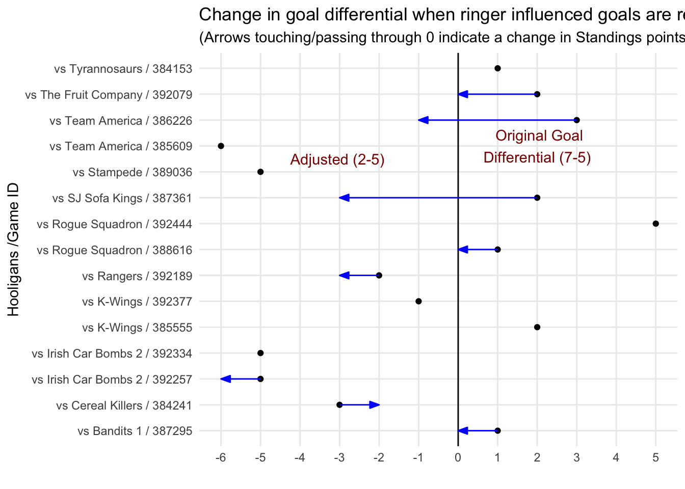
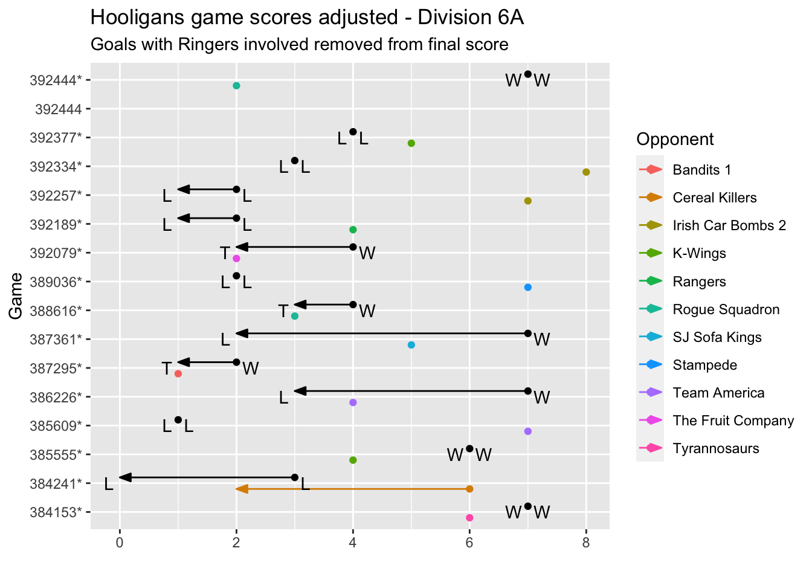
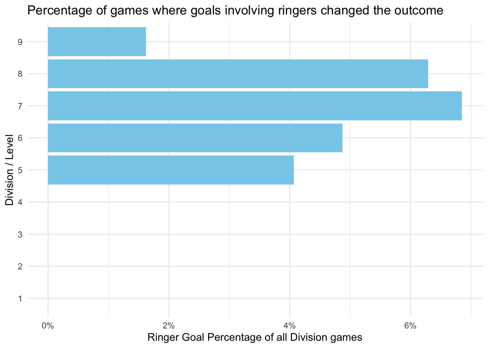

library(tidyverse)
library(janitor)
library(rvest)
library(xml2)
library(codename)
library(randomNames)
library(scales)
library(gt)
library(here)
source('siahl-utils.R')
season_file <- here('data', "siahl_season_ids.RDS")
seasons <- readRDS(file = season_file)
teams_file <- here('data', "teams-all_seasons.RDS")
teams_all_seasons <- readRDS(file = teams_file)
#TODO: consolidate these into a single input
season_name <- 'Current' # "Current" or "<Season> <Year>" eg. "Winter 2023"
season <- 'Current' # "Current" or "<Year>_<Season>" eg. "2023_winter"
season_id <- seasons %>% filter(season_name == .env$season_name) %>% pull(season_id)
stopifnot(season_id >= 0)
players_file <- here('data', sprintf("player_stats-%s.RDS", season))
players_file_all_seasons <- here('data', "player_stats-all_seasons.RDS")
games_stats_file <- here('data', sprintf("games_stats-%s.RDS", season))
scorecards_file <- here('data', sprintf("games_tables-%s.RDS", season))
players <- readRDS(file = players_file) %>%
mutate(across(where(~ all(!is.na(as.numeric(.)))), as.numeric, .names = "{.col}"))
players_all_seasons <- readRDS(file = players_file_all_seasons) %>%
mutate(across(where(~ all(!is.na(as.numeric(.)))), as.numeric, .names = "{.col}"))
games <- readRDS(file = games_stats_file) %>%
mutate(across(where(~ all(!is.na(as.numeric(.)))), as.numeric, .names = "{.col}"))
scorecards <- readRDS(file = scorecards_file)
#adjusted games is produced by this script so may or may not exist yet
games_adj_file <- here('data', sprintf("games_adj-%s.RDS", season))
if (file.exists(games_adj_file)) games_adj <- readRDS(games_adj_file)SIAHL Stats EDA
set.seed(12)
player_codename_map <- players_all_seasons %>%
mutate(year = str_extract(Season, '\\d+') %>% as.numeric()) %>%
filter(year >= 2020) %>% # max names for randomNames is ~4500
select(Name) %>%
bind_rows(players %>% select(Name)) %>%
unique() %>%
mutate(codename = randomNames(n(), which.names = "both", sample.with.replacement = FALSE,
name.order = "first.last", name.sep = " ")
)
players <- players %>% left_join(player_codename_map, by = 'Name')Players in more than one division
multi_div <- players %>%
count(Name) %>%
filter(n > 1)
players_multi <- multi_div %>%
left_join(players, by = "Name") get_xleague_stats <- function(players_df) {
players_df %>%
mutate(PpG = Pts / GP,
GpG = Goals / GP,
DivLevel = str_extract(Division, '\\d+') %>% as.numeric()) %>%
group_by(Name) %>%
arrange(Division) %>%
summarise(n_leagues = n(),
best_level = min(DivLevel),
gp_as_ringer = sum(ifelse(DivLevel > (best_level + 2), GP, 0)),
# min_Goals = min(Goals),
# max_Goals = max(Goals),
# min_Pts = min(Pts),
# max_Pts = max(Pts),
min_PpG = min(PpG),
max_PpG = max(PpG),
PpG_spread = last(PpG) - first(PpG),
GpG_spread = last(GpG) - first(GpG),
Div_spread = last(DivLevel) - first(DivLevel),
`L/H Divs` = sprintf("%s-%s", first(Division), last(Division)) )
}
# xleague_stats <- get_xleague_stats()ringers <- players_multi %>%
get_xleague_stats() %>%
filter(Div_spread > 2)The all_seasons dataset represents a more efficient and comprehensive way to do this (discovered after writing the method above). In August 2023, I discovered that the rosters for past seasons are not stable as some names were removed, whereby the all_seasons dataset is more stable because it records all the games the players played in (not just the ones they played as rostered player). The downside to this dataset is that it takes a very long time to scrape (scrape must be executed for each player), so it’s probably best to rely on the former method for the current season.
This section takes a second approach for identifying ringers based on the all_seasons dataset
players2 <- players_all_seasons %>%
filter(Season == season_name) %>%
left_join(teams_all_seasons %>% select(
Season = season_name,
Team = team,
Division = division),
by = join_by(Team, Season))
# we need the check because players2 data may not exist for "Current" season
if (nrow(players2) > 0) {
ringers2 <- players2 %>%
rename(GP = `Games Played`) %>%
get_xleague_stats() %>%
filter(Div_spread > 2)
}
if (exists("ringers2")) ringers <- ringersall_teams <- players %>%
mutate(DivLevel = str_extract(Division, '\\d+') %>% as.numeric()) %>%
left_join(ringers %>% select(Name, ringer_level = best_level) , by = 'Name') %>%
mutate(ringer_count = ifelse((DivLevel - ringer_level) > 2, 1, 0),
ringer_count = ifelse(is.na(ringer_count), 0, ringer_count))Which teams have the most ringers
gen_team_codename <- function(seed = 19) {
codename(type = "wu-tang", seed = seed) %>% str_replace("([^s])$", "\\1s")
}
team_stats <- players %>%
mutate(DivLevel = str_extract(Division, '\\d+') %>% as.numeric()) %>%
left_join(ringers %>% select(Name, ringer_level = best_level) , by = 'Name') %>%
mutate(ringer_count = ifelse((DivLevel - ringer_level) > 2, 1, 0),
ringer_count = ifelse(is.na(ringer_count), 0, ringer_count)) %>%
group_by(Team, Division, Rank, DivLevel) %>%
summarise(n_players = n(),
ringer_count_all = sum(ringer_count, na.rm = TRUE),
ringer_games_count = sum(ringer_count * GP, na.rm = TRUE),
.groups = 'drop') %>%
mutate(codename = map_chr(1:n(), gen_team_codename))home_points <- function(home_goals, visitor_goals) {
if(home_goals == visitor_goals) return(1)
if(home_goals > visitor_goals) return(2)
return(0)
}
home_games <- games %>% filter(home == 1) %>% pull(Game)
# home_games <- games[1412:1987, ] %>% filter(home == 1) %>% pull(Game)
unmatched_players <- tibble()
if (! exists("games_adj")) games_adj <- tibble()
home_games_unprocessed <- setdiff(home_games, games_adj$Game)
progress_count <- 0
for (game_id in home_games_unprocessed) {
if((progress_count <- progress_count + 1) %% 100 == 0) message("...", progress_count)
scorecard <- scorecards[[game_id]]
game_row <- games %>%
filter(Game == game_id, home == 1 )
if(! is.null(scorecard)) {
scorecard <- fix_known_scorecard_errors(scorecard, game_id)
game_row <- game_row %>%
filter(Game == game_id, home == 1 ) %>%
mutate(h_goals = scorecard %>% scorecard_goals(home = TRUE) %>% nrow(),
v_goals = scorecard %>% scorecard_goals(home = FALSE) %>% nrow(),
hg_adj = scorecard %>% scorecard_goals(home = TRUE, remove_ringer_goals = TRUE) %>% nrow(),
vg_adj = scorecard %>% scorecard_goals(home = FALSE, remove_ringer_goals = TRUE) %>% nrow(),
hdiff_adj = hg_adj - vg_adj,
hpts = home_points(h_goals, v_goals),
hpts_adj = home_points(hg_adj, vg_adj),
adj_effect = hpts != hpts_adj)
}
games_adj <- bind_rows(games_adj, game_row)
}
message("... ", progress_count, " games processed")... 0 games processedeffect_by_div <- games_adj %>%
filter(! is.na(adj_effect)) %>%
mutate(Level = str_extract(Division, '\\d+')) %>%
group_by(Level) %>%
summarize(affected = sum(adj_effect) / n(), .groups = 'drop')
effect_by_div_plt <- effect_by_div %>%
ggplot(aes(Level, affected)) +
geom_col(fill = 'skyblue') +
coord_flip() +
xlab("Division / Level") +
scale_y_continuous("Percentage of all Division games", labels = percent_format()) +
ggtitle("Percentage of games where goals involving ringers changed the outcome") +
theme_minimal()
effect_by_div_plt
effect_by_div %>%
arrange(desc(Level)) %>%
gt()| Level | affected |
|---|---|
| 9 | 0.00000000 |
| 8 | 0.05839416 |
| 7 | 0.08108108 |
| 6 | 0.07389163 |
| 5 | 0.04929577 |
| 4 | 0.00000000 |
| 3 | 0.00000000 |
| 2 | 0.00000000 |
| 1 | 0.00000000 |
Which teams had the biggest affect from Ringers
ringer_effect <- tibble()
affected_game_ids <- games_adj %>% filter(adj_effect) %>% pull(Game)
for(gid in affected_game_ids) {
game_row <- games_adj %>% filter(Game == gid)
game_scores <- tibble::tribble(
~Game, ~Division, ~team, ~goals, ~goals_adj, ~season_pts, ~season_pts_adj,
#Home team row
gid, game_row$Division,
game_row$Home,
game_row$h_goals,
game_row$hg_adj,
wlt_outcome(game_row$h_goals, game_row$v_goals, text = FALSE),
wlt_outcome(game_row$hg_adj, game_row$vg_adj, text = FALSE),
#Away team row
gid, game_row$Division,
game_row$Away,
game_row$v_goals,
game_row$vg_adj,
wlt_outcome(game_row$v_goals, game_row$h_goals, text = FALSE),
wlt_outcome(game_row$vg_adj, game_row$hg_adj, text = FALSE)
) %>%
mutate(season_pts_diff = season_pts_adj - season_pts)
ringer_effect <- bind_rows(ringer_effect, game_scores)
}
ringer_effect_agg <- ringer_effect %>%
group_by(team, Division) %>%
summarise(adj_points = sum(season_pts_diff),
.groups = 'drop') %>%
arrange(adj_points)
worst_offender <- ringer_effect_agg %>% slice(1) %>% pull(team, Division)
worst_offender 6A
"Hooligans" Pull out the worst offenders game stats and goal percentages
worst_case_games <- games_adj %>%
filter(Home == worst_offender | Away == worst_offender)
worst_case_players <- players %>%
filter(Team == worst_offender, Division == names(worst_offender)) %>%
left_join(ringers, by = 'Name') %>%
select(`#`, GP, Goals, Ass., Pts, Team, contains('Div')) %>%
mutate(is_ringer = ! is.na(Div_spread)) %>%
group_by(is_ringer) %>%
summarise(Goals = sum(Goals),
Pts = sum(Pts)) %>%
mutate(Goals_pct = Goals / sum(Goals),
Pts_pct = Pts / sum(Pts))
worst_case_players# A tibble: 2 × 5
is_ringer Goals Pts Goals_pct Pts_pct
<lgl> <dbl> <dbl> <dbl> <dbl>
1 FALSE 49 109 0.891 0.879
2 TRUE 6 15 0.109 0.121#refactor Home/Away to Team/Opponent
worst_case_season <- tibble()
for (igame in 1:nrow(worst_case_games)) {
dfrow <- worst_case_games[igame, ]
if (dfrow$Home == worst_offender) {
scoring_cols <- dfrow %>% transmute(
Team = Home,
Opponent = Away,
goals_for = `Home Goals`,
goals_against = `Away Goals`,
adj_goals_for = hg_adj,
adj_goals_against = vg_adj )
} else {
scoring_cols <- dfrow %>% transmute(
Team = Away,
Opponent = Home,
goals_for = `Away Goals`,
goals_against = `Home Goals`,
adj_goals_for = vg_adj,
adj_goals_against = hg_adj )
}
game_refactored <- dfrow %>%
select(Game, Division, adj_effect) %>%
bind_cols(scoring_cols) %>%
mutate(goal_diff = goals_for - goals_against,
adj_gdiff = adj_goals_for - adj_goals_against,
`Game/ID` = sprintf("vs %s / %s", Opponent, str_extract(Game, '\\d+')))
worst_case_season <- bind_rows(worst_case_season,
game_refactored) %>%
arrange(`Game/ID`)
}
geom_arrow <- function(...) {
geom_segment(..., arrow = arrow(ends = "last", type = "closed",
angle = 20, length = unit(0.1, "inches")))
}
axis_range <- range(c(worst_case_season$goal_diff, worst_case_season$adj_gdiff), na.rm = T)
# set illustrative_game_id for an improved explantory annotation specific to the plot
#illustrative_game_id <- "387361*".
if (exists("illustrative_game_id")) {
game_note <- which(worst_case_season$Game == illustrative_game_id)
note_orig <- sprintf(" Original Goal\nDifferential (%d-%d)", annotate_diff$goals_for, annotate_diff$goals_against)
note_adj <- sprintf("Adjusted (%d-%d) ", annotate_diff$adj_goals_for, annotate_diff$adj_goals_against)
} else {
game_note <- 1
note_orig <- note_adj <- ""
}
annotate_diff <- worst_case_season %>% arrange(`Game/ID`) %>% .[game_note, ]
goal_diff_plt <- worst_case_season %>%
ggplot(aes(y = `Game/ID`, yend = `Game/ID`, x = goal_diff)) +
geom_point() +
geom_vline(xintercept = 0) +
theme_minimal() +
# annotate("text", y = game_note + 1.0, x = annotate_diff$goal_diff,
# label = note_orig, hjust = "center", color = 'darkred') +
# annotate("text", y = game_note + 0.5, x = annotate_diff$adj_gdiff,
# label = note_adj, hjust = "center", color = 'darkred') +
geom_arrow(aes(xend = adj_gdiff), color = "blue",
data = . %>% filter(goal_diff != adj_gdiff)) +
ggtitle("Change in goal differential when ringer influenced goals are removed",
subtitle = "(Arrows touching/passing through 0 indicate a change in Standings points)") +
xlab("") +
ylab(sprintf("%s /Game ID", worst_offender)) +
scale_x_continuous(breaks = seq(axis_range[1], axis_range[2] ,by = 1), minor_breaks = NULL)
goal_diff_pltWarning: Removed 1 rows containing missing values (`geom_point()`).
Alternate plot that was explored (abandoned since its too complex to read)
wlt <- function(goals_for, goals_against) {
case_when(
goals_for > goals_against ~ "Win",
goals_for == goals_against ~ "Tie",
TRUE ~ "Loss"
)
}
nudge = 0.2
worst_case_season %>%
mutate(outcome = wlt(goals_for, goals_against) %>% str_extract('^.'),
adj_outcome = wlt(adj_goals_for, adj_goals_against) %>% str_extract('^.'),
`Changed Outcome` = outcome != adj_outcome) %>%
ggplot(aes(y = `Game`, yend = `Game`, x = goals_for, xend = adj_goals_for)) +
geom_point(position = position_nudge(y = nudge)) +
geom_arrow(data = . %>% filter(goals_for != adj_goals_for),
position = position_nudge(y = nudge)) +
geom_point(aes(x = goals_against, color = Opponent), position = position_nudge(y = -nudge)) +
geom_arrow(aes(x = goals_against, xend = adj_goals_against, color = Opponent),
data = . %>% filter(goals_against != adj_goals_against),
position = position_nudge(y = -nudge)) +
geom_text(aes(label = outcome), hjust = "left", nudge_x = 0.1) +
geom_text(aes(x = adj_goals_for, label = adj_outcome), hjust = "right", nudge_x = -0.1) +
xlab("") +
ggtitle(sprintf("%s game scores adjusted - Division %s", worst_offender, names(worst_offender)),
subtitle = "Goals with Ringers involved removed from final score")Warning: Removed 1 rows containing missing values (`geom_point()`).
Removed 1 rows containing missing values (`geom_point()`).Warning: Removed 1 rows containing missing values (`geom_text()`).
Removed 1 rows containing missing values (`geom_text()`).
How would the standings have changed if the adjusted scores were used
worst_case_league <- games_adj %>%
filter(Division == names(worst_offender)) %>%
mutate(vpts = 2 - hpts,
vpts_adj = 2 - hpts_adj) %>%
select(Game, Division, Home, Away, contains('pts')) %>%
pivot_longer(cols = c(Home, Away), names_to = "home_away", values_to = "Team") %>%
mutate(points = ifelse(home_away == 'Home', hpts, vpts),
points_adj = ifelse(home_away == 'Home', hpts_adj, vpts_adj)) %>%
select(-(contains('pts')))
wcl_rank_adj <- worst_case_league %>%
count(Team, wt = points_adj, name = "Pts (adj)") %>%
arrange(-`Pts (adj)`) %>%
mutate(Rank = 1:n()) %>%
rename(`Team (adj)` = Team)
wcl_rank <- worst_case_league %>%
count(Team, wt = points, name = "Pts") %>%
arrange(-Pts) %>%
mutate(Rank = 1:n()) %>%
left_join(wcl_rank_adj, by = 'Rank') %>%
left_join(wcl_rank_adj %>% select(`Team (adj)`, `Rank (adj)` = Rank),
by = c("Team" = "Team (adj)")) %>%
select(Rank, Team, Pts, `Team (adj)`, `Pts (adj)`, `Rank (adj)`)
wcl_rank# A tibble: 13 × 6
Rank Team Pts `Team (adj)` `Pts (adj)` `Rank (adj)`
<int> <chr> <dbl> <chr> <dbl> <int>
1 1 K-Wings 20 K-Wings 20 1
2 2 Stampede 20 Stampede 20 2
3 3 Cereal Killers 19 The Fruit Company 19 6
4 4 The Fruit Company 18 Irish Car Bombs 2 18 3
5 5 Bandits 1 16 Bandits 1 17 5
6 6 Hooligans 16 Cereal Killers 17 12
7 7 Irish Car Bombs 2 16 SJ Sofa Kings 17 4
8 8 Rangers 16 Rangers 16 8
9 9 Rogue Squadron 15 Rogue Squadron 16 9
10 10 SJ Sofa Kings 15 Team America 12 7
11 11 Peter North Stars 11 Peter North Stars 11 11
12 12 Team America 10 Hooligans 9 10
13 13 Tyrannosaurs 4 Tyrannosaurs 4 13worst_rank_change_plt <- wcl_rank %>%
mutate(
color_left = case_when(
Rank > `Rank (adj)` ~ 'rise',
Rank < `Rank (adj)` ~ 'drop',
TRUE ~ 'same') ) %>%
ggplot(aes(y = Rank, color = color_left)) +
geom_label(aes(label = Team), x = 1.2, hjust = "right") +
geom_label(aes(label = Team, y = `Rank (adj)`), x = 2, hjust = "left") +
scale_y_reverse(breaks = 1:nrow(wcl_rank)) +
scale_color_manual(values = c("drop" = "darkred", "rise" = "skyblue", "same" = "darkgrey")) +
geom_segment(aes(y = Rank, yend = `Rank (adj)`), x = 1.2, xend = 2) +
xlim(-0.5, 3.5) +
theme_minimal() +
theme(axis.ticks.x = element_blank(),
panel.grid.major = element_blank(),
panel.grid.minor.x = element_blank(),
axis.text.x = element_blank(),
axis.title = element_blank(),
legend.position = 'none') +
annotate("text", x = 1.2, y = 0, label = "Rank", hjust = "right") +
annotate("text", x = 0, y = 0, label = "Points", hjust = "right") +
annotate("text", x = 2, y = 0, label = "Adjusted Rank", hjust = "left") +
annotate("text", x = 3.2, y = 0, label = "Points", hjust = "left") +
geom_text(aes(label = Pts), x = 0, color = "black", hjust = "right") +
geom_text(aes(label = `Pts (adj)`), x = 3.2, color = "black", hjust = "left") +
ggtitle("Team Standings if goals involving ringers were eliminated")
worst_rank_change_plt
There a significat affect on games.
Here’s the percentage of goals involving ringers by division / Level
ringer_goals_div <- games_adj %>%
mutate(DivLevel = str_extract(Division, '\\d+') %>% as.numeric()) %>%
select(DivLevel, contains('_goals'), contains('g_adj')) %>%
drop_na() %>% #forefeits
group_by(DivLevel) %>%
summarise(`Total Goals` = sum(h_goals + v_goals),
`Ringer Goals` = `Total Goals` - sum(hg_adj + vg_adj)) %>%
mutate(`Ringer %` = round(100 * `Ringer Goals` / `Total Goals`, 1))
ringer_goals_div_plt <- ringer_goals_div %>%
ggplot(aes(DivLevel, `Ringer %`)) +
geom_col(fill = 'skyblue') +
coord_flip() +
theme_minimal()
ringer_goals_div <- games_adj %>%
mutate(DivLevel = str_extract(Division, '\\d+') ) %>%
select(DivLevel, contains('_goals'), contains('g_adj')) %>%
drop_na() %>% #forefeits
group_by(DivLevel) %>%
summarise(total_goals = sum(h_goals + v_goals),
ringer_goals = total_goals - sum(hg_adj + vg_adj)) %>%
mutate(ringer_share = ringer_goals / total_goals)
ringer_goals_div_plt <- ringer_goals_div %>%
ggplot(aes(DivLevel, ringer_share)) +
geom_col(fill = 'skyblue') +
coord_flip() +
theme_minimal() +
xlab("Division / Level") +
scale_y_continuous("Ringer Goal Percentage of all Division games", labels = percent_format()) +
ggtitle("Percentage of games where goals involving ringers changed the outcome")
ringer_goals_div_plt
It tells the same story that the ‘affected games’ plot tells, so I’ll leave it out of the final write up.
Predictive model for scoring
Let’s try to build a regression model that helps illuminates the effect of being a ringer, for any player on a specific team
Response = pts/game
Predictors:
- Games played in season
- Games played on other teams
- Whether the player is a ringer in this league (binary)
- Number of player-games for team (higher team rosters in aggregate should reduce ice time, and thus scoring)
- Team Rank
Conclusion: Effects are too small here. Abandonning for now, but leaving initial attempt below as starting point for further analysis
pts_model_data <- all_teams %>%
filter(! str_detect(tolower(Name), 'no credit')) %>%
group_by(Name) %>%
mutate(GP_other_teams = sum(GP) - GP,
PPG = Pts / GP) %>%
ungroup() %>%
group_by(Team, Division) %>%
mutate(player_games = sum(GP)) %>%
ungroup() %>%
select(Name, PPG,
Division, DivLevel,
GP, GP_other_teams,
player_games,
Rank,
ringer_count)
lm_fit <- lm(PPG ~ ., data = pts_model_data %>% select(-Name, -Division) )
summary(lm_fit)
Call:
lm(formula = PPG ~ ., data = pts_model_data %>% select(-Name,
-Division))
Residuals:
Min 1Q Median 3Q Max
-1.1793 -0.4605 -0.1331 0.3240 4.1333
Coefficients:
Estimate Std. Error t value Pr(>|t|)
(Intercept) 1.5853139 0.0990059 16.012 < 2e-16 ***
DivLevel -0.0635944 0.0070696 -8.995 < 2e-16 ***
GP 0.0138824 0.0031398 4.421 1.01e-05 ***
GP_other_teams 0.0055923 0.0010946 5.109 3.42e-07 ***
player_games -0.0026880 0.0006585 -4.082 4.57e-05 ***
Rank -0.0322674 0.0037955 -8.501 < 2e-16 ***
ringer_count 0.2273516 0.0803253 2.830 0.00468 **
---
Signif. codes: 0 '***' 0.001 '**' 0.01 '*' 0.05 '.' 0.1 ' ' 1
Residual standard error: 0.6549 on 3353 degrees of freedom
Multiple R-squared: 0.08448, Adjusted R-squared: 0.08284
F-statistic: 51.56 on 6 and 3353 DF, p-value: < 2.2e-16saveRDS(games_adj, file = games_adj_file)
rdata_file <- sprintf('siahl-eda-%s.qmd.RData', season)
save.image(file = here('data', rdata_file))